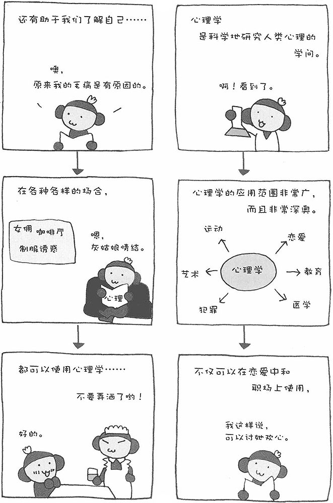

前面已经为大家介绍了几个有关心理学的例子，可是心理学到底是什么样的学问呢？恐怕您还没有一个具体的概念。人看到漂亮的花朵会感觉赏心悦目，看了感人的电影会痛哭流涕，这些都是心理活动产生的结果。简单而言，心理学就是观察人类的行为、分析行为的理由和原因、研究心理活动的学问。简言之，心理学就是科学地研究人类心理的学问。
实际上，人类的心理非常不可思议。有时，明明是自己喜欢的人，却故意冷落他，面对不喜欢的人反倒热情相待，而事后往往后悔不已。"喜欢"和"讨厌"的本质到底是什么呢？实际上，这些行为和思维的背后是有一定原因的。如果能找出其中的缘由，人就可以更透彻地了解自己，在人际交往中也能避免很多不必要的麻烦。总而言之，心理学就像指南针一样，可以指导我们更好地了解自己、认识他人。
心理学的应用范围很广。例如，在东京新宿的夜总会，酒水促销小姐就要研究顾客的心理，然后采取相应的对策哄顾客高兴，让他们买更贵的酒水，喝更多的酒。业绩好的酒水促销小姐都是经过反复实验、失败、再实验才取得了促销的真经。这利用的就是通过对方的行为分析其心理状态的心理学。
不过，心理学的应用并不局限于人际交往。通过研究发生自然灾害时人们的心理，可以制定出最合理的避难措施；通过研究罪犯的心理，可以采取适当的措施有效减少犯罪，并改造罪犯的人格；还可以通过心理学研究，纠正人类视觉的错觉。总之，心理学的应用范围非常广，与此同时它还是一门非常深奥的学问。
